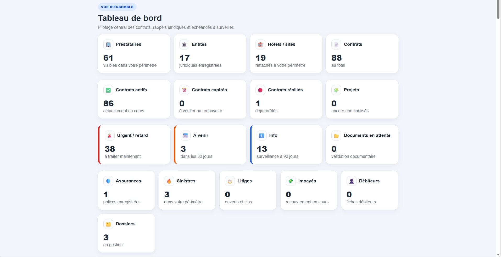
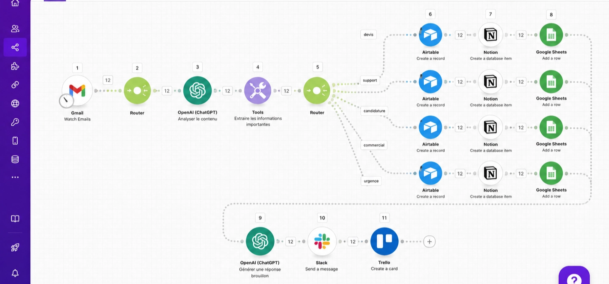
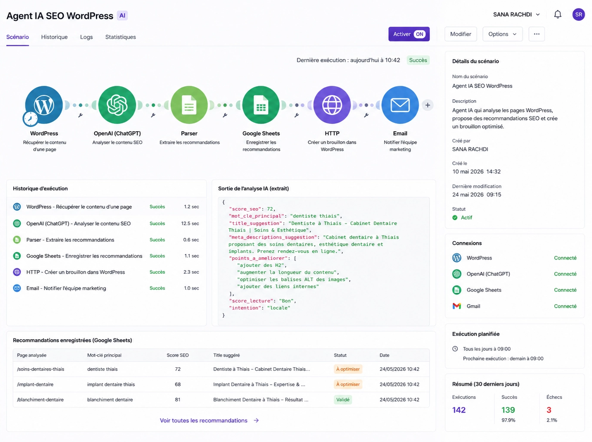
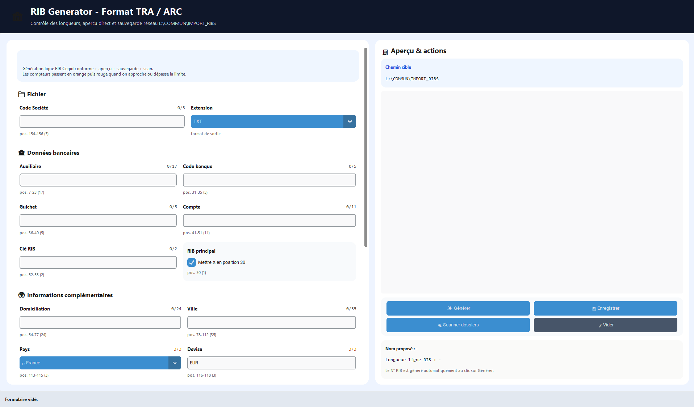

Recherche d'un stage de 2 mois · Octobre à décembre 2026
Product Builder · No-Code · IA · Automatisation
Je transforme des besoins métier en solutions digitales utiles.
Conceptrice d'Applications No-Code en formation, je combine UX/UI, automatisation, IA, bases de données, développement web et SEO pour créer des outils simples, fiables et orientés utilisateur.
Expertise
Une approche complète, du besoin au produit.
Je peux intervenir sur l'analyse, la conception, l'interface, les données, l'automatisation, le développement et l'optimisation.
No-Code & Automatisation
BubbleMaken8nAirtableNotionGoogle Sheets
IA & Prompt Engineering
ChatGPTOpenAIAgents IAPrompt Engineering
UX/UI & Produit
FigmaWireframesPrototypageAuto LayoutDesign SystemUser Stories
Développement & Data
HTMLCSSJavaScriptPythonSQLMySQLDuckDB
SEO, CMS & Analytics
WordPressElementorSEO techniqueSEO On-pageGEOGA4Search Console
Gestion de projet
AgileUMLMeriseCahier des chargesRecueil des besoinsCRM
Proof of work
Des projets concrets, orientés impact.
CAPSA Paradise Land
UX/UISEOMenu digital
CAPSA Paradise Land
Conception d'une expérience web pour un parc de loisirs et espace événementiel : architecture, contenus, maquettes, SEO local, menu interactif et automatisations marketing.
ObjectifCentraliser l'offre, renforcer la visibilité locale et faciliter la réservation.

PythonDjangoWorkflows
RX Contracts
Plateforme interne de gestion des contrats, prestataires, litiges, documents et échéances avec alertes automatiques.

MakeOpenAIAirtable
Assistant IA de triage
Analyse, classification et structuration des demandes entrantes avec création automatique d'un brouillon de réponse.

IASEOWordPress
Agent IA SEO WordPress
Prototype capable d'analyser une page, détecter les optimisations et générer des recommandations actionnables.

PythonDesktopAutomatisation
RIB Generator
Application desktop générant automatiquement des fichiers comptables TXT conformes avec contrôle des erreurs.
Projet Airbnb No-Code
BubbleUMLFigma
Application de réservation
Conception d'une application type Airbnb : besoins, cas d'utilisation, base de données, parcours utilisateur et interfaces.
Ma méthode
Un processus clair pour construire juste.
Comprendre
Recueil du besoin, contraintes, utilisateurs, objectifs et indicateurs de réussite.
Structurer
User stories, parcours, règles métier, données, UML/Merise et priorisation du MVP.
Prototyper
Wireframes, maquettes Figma, composants, tests de compréhension et ajustements.
Construire
Développement No-Code ou web, intégrations, workflows, IA et automatisations.
Tester
Scénarios fonctionnels, responsive, accessibilité, gestion des erreurs et qualité.
Optimiser
Mesure, SEO, analytics, documentation et amélioration continue du produit.
Parcours
Une expérience digitale devenue expertise produit.
2026 — 2027
Conceptrice d'Applications No-Code
L'IDEM · Formation RNCP niveau 6
Conception produit, Bubble, automatisation, IA, UX/UI, bases de données, UML, gestion de projet et développement web.
Depuis 2026
Product Builder & Automatisation IA
Projets personnels et freelance
Conception de workflows Make et n8n, agents IA, outils internes, prototypes et tableaux de bord.
2025
Chargée Marketing Digital & SEO
CCP
Contenus, emailing, automatisation de tâches marketing, optimisation SEO et suivi de visibilité digitale.
2022 — 2025
Développeuse WordPress & Marketing Digital
Altra Systems
Création et maintenance de sites, SEO, analytics, accompagnement client et formation des équipes.
2020 — 2022
Master 2 Informatique
Informatique distribuée
Architecture logicielle, développement, données et systèmes distribués.
Parlons de votre projet
Je recherche une équipe où apprendre, contribuer et construire.
Disponible pour un stage de 2 mois à partir d'octobre 2026, à Perpignan, Montpellier, Toulouse ou à distance.